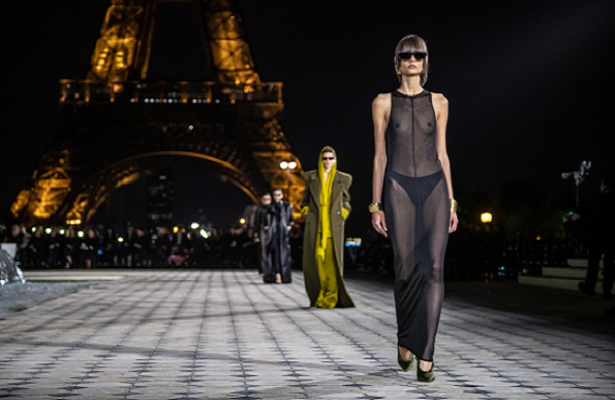

Cores e elementos lúdicos marcam a moda masculina de Paris e Milão
24/06/2022 18h27 - Atualizado 24/06/2022 18h29
Após dois anos de incertezas e paralisações pela pandemia da Covid-19, as semanas de moda voltaram com tudo ao formato presencial. Depois das semanas de alta costura e inverno no início do ano, chegou a vez da moda masculina de verão 2023 invadir as passarelas de Paris e Milão, em apresentações cheias de influências criativas e elementos lúdicos nas mais diversas vertentes.
Em Paris, o destaque da temporada foi o desfile de verão 2023 literalmente "cheio de imaginação", da Louis Vuitton. Em uma bela homenagem ao estilista Virgil Abloh, morto em novembro do ano passado, a marca trouxe para a passarela todas as referências de brinquedos, cartoons, música e skate, que o diretor criativo adotava em suas memoráveis criações. Ao som de Kendrick Lamar, a grife apresentou a coleção "Strange Math", em que a visão criativa do estilista aparece em silhuetas mais descontraídas, com calças amplas contrapostas a jaquetas de ombros mercados e a alfaiataria fazendo oposição ao streetwear, em um belo artesanal. Os skatistas se fizeram presente nos sneakers apresentados pela marca, incluindo uma nova versão do LV Trainer, com cadarços e língua mais largos.
Os skates também apareceram com força na estreia de Jonathan Anderson, e sua JW Anderson, em Milão. Inspirada na peça The Pitchfork Disney de Philip Ridley, em que ele participou como ator na década de 1990, a coleção trouxe skates quebrados colados ao corpo, além de luvas de borracha industrial na forma de mangas, dobradiças de portas em camisetas, guidões de bicicletas como acessórios de apoio em suéteres e CDs incorporados às peças, criando imagens de moda divertidas e um tanto exóticas.
Os contrastes e a leveza do "usar a moda para brincar e se divertir" marcaram ainda o desfile da Fendi. "Uma sensação eterna de liberdade para brincar, enquanto redescobrimos o luxo do tempo livre", resumiu Silvia Venturini Fendi, sobre sua moda masculina "de férias", colorida por tons que foram do índigo ao melão, passando pelo bege e cinza prateado. As franjas e correntes de margaridas feitas com vidrilhos chamaram a atenção no desfile da marea, que fez também fez menção ao universo skatista com uma versão de tênis de couro com miçangas e cadarcos felpudos.
Assim como a Fendi, a Emporio Armani surfou na onda das férias, com um verão repleto de camisas leves e calças fluidas, e detalhes como fendas e aberturas verticais para os dias mais quentes. Shorts e macacões curtos confortáveis ganharam força no desfile da marca.
Já a Zegna, que encerrou a semana de Milão, preferiu seguir o caminho de peças funcionais sem, porém, perder a leveza. Com um desfile no telhado da histórica fábrica de là Lanifício Zegna, transmitido digitalmente em tempo real, a grife apostou em silhuetas soltas e desestruturadas, jaquetas que lembram quimonos, blazers sem gola, camisetas que funcionam como agasalho e calças com modelagens mais arredondadas.